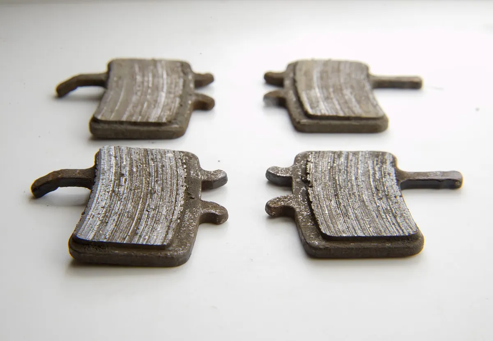

Инструкция · Тормоза
Приработка дисковых колодок и роторов (bed-in)
Новые колодки и роторы набирают полную эффективность только после приработки: на ротор переносится тонкий слой материала колодки. SRAM, Shimano и другие производители описывают процедуру в руководствах; общий принцип одинаков — серия торможений с умеренной скорости без блокировки колёс. Ниже — пример по схеме, опубликованной SRAM; у вашего производителя числа могут отличаться.

⚠ Важно
- Не трогайте ротор сразу после торможений — он сильно нагревается.
- Если тормоз скрипит и слабеет после приработки — возможно, колодки «засалены» (см. «Что случилось?»).
Пошагово
- 1Выберите безопасное ровное место без движения транспорта. Помните: до приработки тормоз слабее обычного.
- 2Разгонитесь примерно до 20 км/ч и плавно, но уверенно затормозите до скорости пешехода (не до полной остановки). Повторите около 20 раз одним тормозом, затем другим.
- 3Разгонитесь примерно до 30 км/ч и резко затормозите до скорости пешехода. Повторите около 10 раз для каждого тормоза.
- 4Не блокируйте колёса и не останавливайтесь с зажатым тормозом на горячем роторе — колодки могут отпечататься на роторе.
- 5Дайте тормозам остыть. После этого тормоз должен работать заметно сильнее и ровнее.